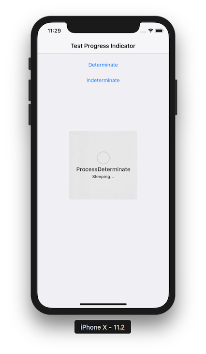

This document is a 3-step tutorial to enable Progress Indicator User Control in Panels.
| Objects | Panel, Procedure, Work With for Smart Devices. |
| Generators | Android, Apple. |
See Progress Indicator User Control in order to understand the API of the user control.
To simulate a Procedure that takes some time you are going to use a Procedure with the Sleep Function set to 4.
For this example, create the following Panel object:
Event 'Determinate'
Composite
Progress.Type = ProgressIndicatorType.Determinate
progress.MaxValue = 100
progress.Value = 0
Progress.ShowWithTitleAndDescription("ProcessDeterminate","Sleeping...")
sleepingProc()
Progress.Value =25
sleepingProc()
Progress.Value =50
sleepingProc()
Progress.Value =75
sleepingProc()
Progress.Value =100
EndComposite
EndEvent
Event 'Indeterminate'
Composite
Progress.Title = "Process Indeterminate"
Progress.Description = "Sleeping..."
Progress.Class = "Table.Progress"
Progress.Type = ProgressIndicatorType.Indeterminate
Progress.Show()
sleepingProc()
EndComposite
EndEvent

| Backlinks |
| Progress external object |